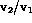
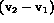
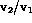
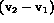

In the separated flow model the restriction on equal phase velocities is relaxed and one now models the momentum exchange between the phases and the channel separately with different velocities, e.g., vapor and liquid velocities. The relaxation of equal velocities is most important when the densities between the phases are quite different in the presence of a gravitational potential field or large pressure gradients. Given a density difference, buoyancy effects tend to induce a drift velocity of the lighter phase in the heavier phase. One measure of this density ratio is the Atwood ratio and is defined in Table 3.1. One notices that as this density ratio approaches zero the HEM model would become more valid because the drift velocity would be reduced as the buoyancy of the lighter phase diminishes. The remaining assumptions of equal temperatures and pressures between the phases are usually retained in most applications. This is because it is usually felt the rates of mass and energy exchange are large enough to promote equilibrium. Once again a check with a more detailed model is recommended as the analysis proceeds to verify this assumption.
The governing equations for the separated flow model are given in Table 3.3. Similar to Table 3.2 we use the 1-D area averaged formulation for two phases. There are two important differences in the equations that one should notice. First, there are now two momentum equations. In each equation there appears a term which represents the friction force at the phase interface caused by the relative velocity between the phases. If the equations are solved separately then one must develop a constitutive relation model for this momentum transfer term. Second, the properties are not averaged exclusively using the void fraction and density of the phases, but require a separate constitutive relation (Eq. 10 in Table 3.3) that relates the volume fraction to the flowing mass fraction. Traditionally the separated flow model has been used primarily for calculating the pressure drop in a flow channel. In this application the usual method of solution is to add the phase momentum equations and eliminate the need to model the interfacial shear stress,  . Then one empirically correlates to obtain a model for the frictional pressure drop for the channel,
. Then one empirically correlates to obtain a model for the frictional pressure drop for the channel,  , and for the slip ratio,  , or velocity differences  between the phases as a function of volume fraction and properties. The model for
, and for the slip ratio,  , or velocity differences  between the phases as a function of volume fraction and properties. The model for  is substituted back in the combined momentum equation and the algebraic correlation for or is used as a substitute for the second balance equation. These types of models are described in more detail when one considers multiphase pressure drop. The drift flux model is a special case of such models, because it is physically based as it predicts void fractions given velocity difference.
is substituted back in the combined momentum equation and the algebraic correlation for or is used as a substitute for the second balance equation. These types of models are described in more detail when one considers multiphase pressure drop. The drift flux model is a special case of such models, because it is physically based as it predicts void fractions given velocity difference.
{kind=link}